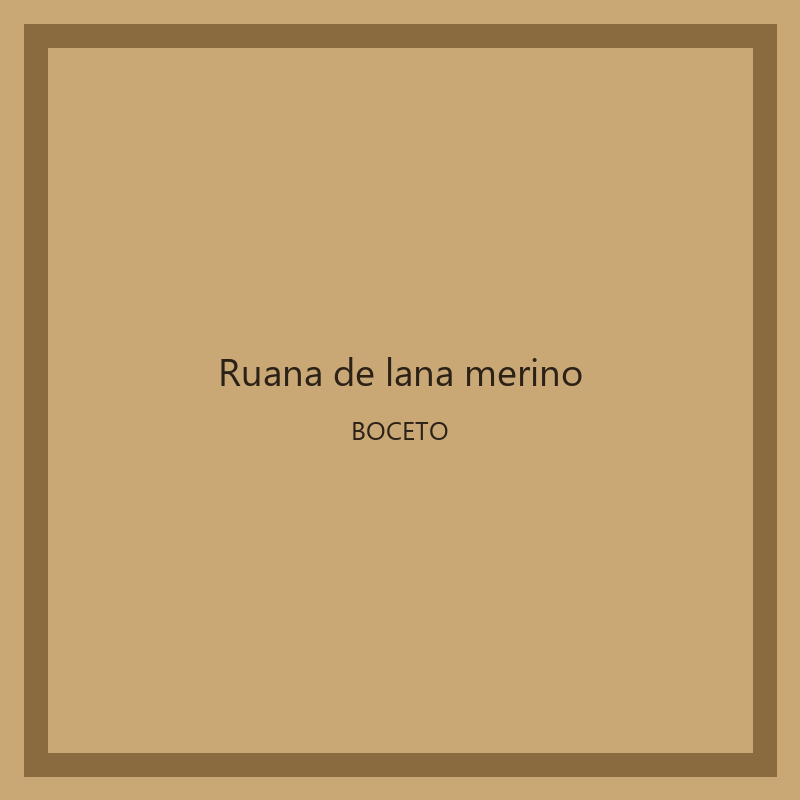
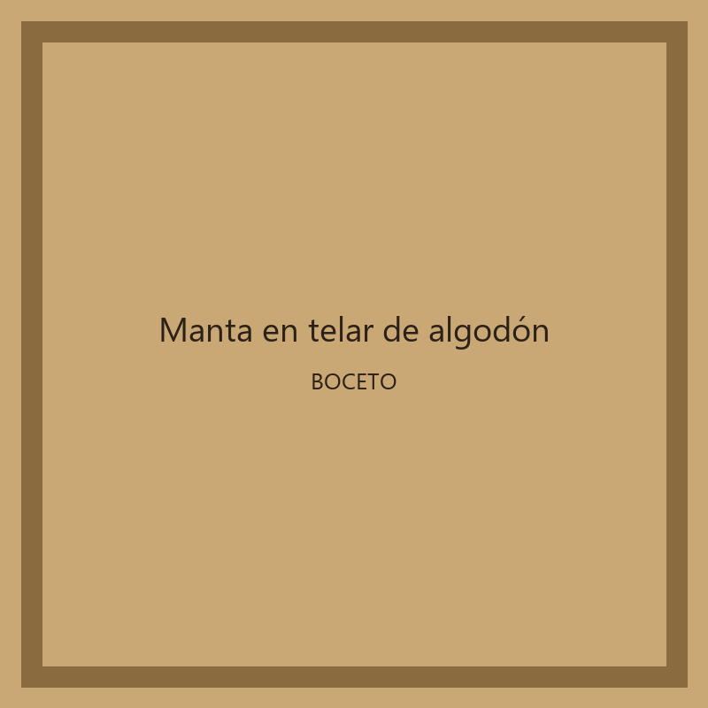

Ruana de lana merino

Ruana tejida en telar manual con lana merino natural, en tonos tierra.
Prendas y abrigos de hogar tejidos a mano en telar y crochet, con lana merino y algodón natural.

Ruana tejida en telar manual con lana merino natural, en tonos tierra.
Chal liviano de punto calado a crochet en hilo de algodón crudo.

Manta de dos plazas tejida en telar con franjas ocre y arena.